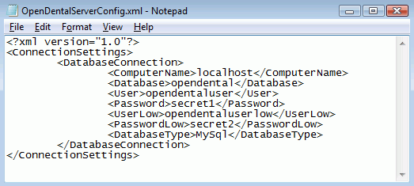
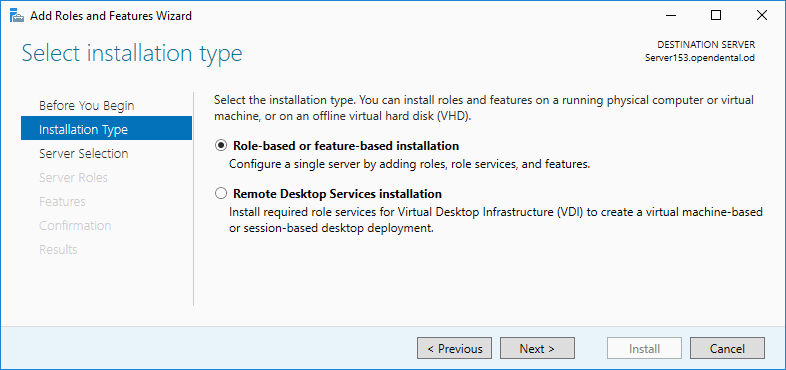
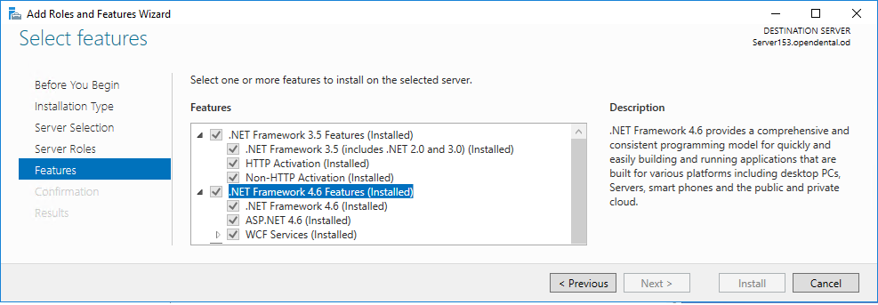
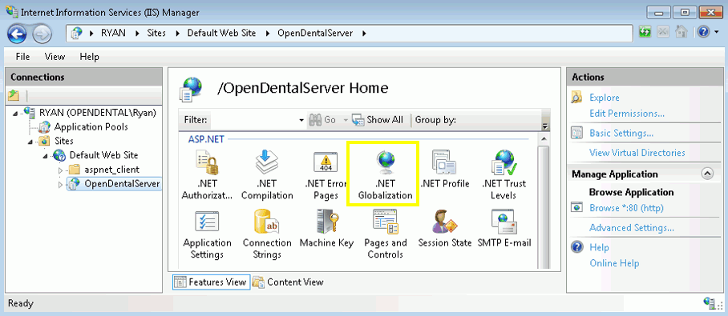
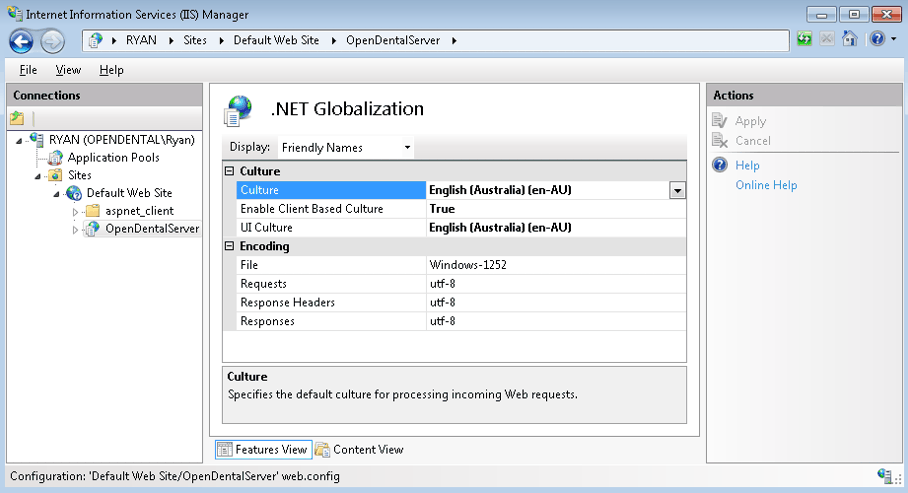

Middle Tier Installation
See Middle Tier.
Follow the steps below to install Middle Tier for your office.
Check Before Setup
You will need to install and perform updates directly from the Middle Tier server. Any attempt to perform an update from another computer will give the user an error message. If you are also using the HL7 Service, refer to Update.
These items must be checked before you begin setting up Middle Tier.
- Locate the OpenDentImages folder (e.g.\\MyServer\OpenDentImages\), then run Setup.exe. This ensures all the correct libraries and folders are installed.
- Ensure that Open Dental can connect to the production database on the selected Middle Tier server.
- Make sure all Open Dental Users that will be connecting through Middle Tier have a Password created.
- In the production database, click Setup, Miscellaneous. Change the Update Server Name to match the Middle Tier server.
- See MySQL Security if you require strong MySQL security.
Installation
Performed directly on the Middle Tier server. Log in as an administrative user.
- Download this file (right-click, Save As): OpenDentalServerConfig.xml, and place it in the application directory of Open Dental on the Middle Tier server. Edit the file to set the users and passwords.
If you do not have MySQL users/passwords set up, use root for the User and leave the password blank.
To enable running reports through Middle Tier, you must also enter MySQL user credentials in the UserLow and PasswordLow sections. See MySQL Security for instructions on creating a MySQL read-only user account for this purpose. If a read only user account is not needed, the root user can be used.
- (Skip this step if you are using Windows Server Web Edition.) Open the Server Manager to enable the Internet Information Services (IIS) features exactly as shown in the next images. If you are a power user, select the IIS features you need. If using Windows Server 2008 or below turn on IIS properties through the Windows Features menu.
- a. Navigate to the Manage menu and select Add Roles and Features.
 Note: A server restart may be required after adding the IIS features to install more necessary features.
Note: A server restart may be required after adding the IIS features to install more necessary features. - b. Select Role-based or feature-based installation. 
- c. Ensure the information selected is accurate and valid. If yes, then click Next.

- d. Ensure that all aspects of IIS, ASP.net, and DotNet are selected within the Web Server (IIS) selection (Please see below image for exact roles to add).

- e. Verify that .Net 3.5 and 4.6 features are selected. 
- f. Confirm the selections and press Install.

- g. Wait for the installation for finish (server may require a restart for changes to take place) and continue the Middle Tier Setup
- a. Navigate to the Manage menu and select Add Roles and Features.
- Open the IIS Management Console:
- a. Right-click on My Computer, Manage.
- b. On Windows Server Web, click Roles, Web Service Name, Internet Information Services. Do not use the second IIS option further down for the older IIS 6.0.
- c. Expand Connections and click Application Pools.

- d. Right-click DefaultAppPool, Advanced Settings.

- e. Ensure the .NET CLR Version is 4.0 and Enable 32-Bit Applications is True.
- f. Click OK.
- In Connections, right-click Default Website, Add Application.

The Alias determines how you refer to the connection in your URI. This can be anything, but the physical path needs to point to the Open Dental application folder. - (Skip this step if English U.S. is your culture setting on all servers and workstations). If using foreign languages on your clients, you must set the language on the server to be the same.
- a. Click on OpenDentalServer, then double click .NET Globalization.
 - b. Set the Culture and UI Culture languages to match your region.

- a. Click on OpenDentalServer, then double click .NET Globalization.
- Open the IIS Manager and select the OpenDentalServer site in the object browser.
- Double-click on the Configuration Editor.

- Use the Section drop down at the top of the Configuration Editor to select the system.web/httpRuntime section

- Modify the maxRequestLength attribute and click Apply on the right.Note: The maxRequestLength value is in kilobytes while the maxAllowedContentLength is in bytes.

- Use the Section drop down at the top of the Configuration Editor to select the system.webServer/security/requestFiltering section.

- Expand the requestLimits attribute, modify the maxAllowedContentLength value, and click Apply on the right.

- When connecting from a client workstation, the Choose Database window will look similar to this. Test this on the server first, then on workstations.

- Enter the URI. If you are unsure what to use for your URI, see What is my URI? in Troubleshooting below.
- Enter the log on credentials, Open Dental User (not MySQL user) and Password, of the user logging in.
- Check Log me in automatically to allow users to automatically log on using their associated Windows user. See, Single Sign-on below.
The above connections settings will be used from other workstations, but not from the Middle Tier server. After the initial testing, the upper direct connection settings will be used anytime you are on the server. This is required in order to perform version updates.
- When you run Open Dental as Administrator and connect via Middle Tier, you should have a FreeDentalConfig file in your application folder similar to the image below. This file should replace the existing .xml file on all your workstations.

Additional Setup Options
Middle Tier Security Certificate (Middle Tier across internet)
Host Multiple Databases from One Web Server
Single Sign-on
Set up single sign-on to allow users to automatically log into Open Dental.
To enable:
- Launch Open Dental.
- In the Choose Database window, enter the Open Dental user name and password.
- Check Log me in automatically.
- Click OK to save.
The FreeDentalConfig file will store the state of the Log me in automatically check box and the credentials will be stored within the Credential Manager. See Technical Details below for more information.
To disable (requires the Choose Database, Permissions):
- Launch Open Dental.
- In the Main Menu select File, Choose Database to open the Choose Database window.
- Uncheck Log me in automatically.
- Click OK to save.
The FreeDentalConfig file will store the state of the Log me in automatically check box and the user will be prompted to enter their user name and password the next time Open Dental is launched.
If the user does not have security permissions, disable single sign-on in the FreeDentalConfig file:
- Navigate to the Open Dental directory, typically C:\Program Files (x86)\Open Dental.
- Right-click the FreeDentalConfig file and select Edit or Open With and select Notepad.
- Look for <UsingAutoLogin>True</UsingAutoLogin> and replace True with False.
- Save the file.
The next time the user launches Open Dental, they will be prompted to enter their user name and password.
Technical Details
When using the single sign on feature via Middle Tier Open Dental makes use of the Credential Manager that comes natively to all Windows 8 and higher versions. The Credential Manager was designed by Microsoft for 3rd party app developers on the Windows Store. This created a uniform and secure place for Microsoft app developers to store user credentials and passwords. The information entered in to the Credential Manager requires a user sign in to access and takes care of all encryption. As such the user should not remove the Credential Manager entry that Open Dental has made or else the feature will no longer work.
The Windows user currently logged in must have read and write permissions to the FreeDentalConfig file in order to enable single sign-on. Do not right-click on the Open Dental shortcut on the Desktop and run as administrator if the Windows user currently logged in does not have elevated privileges. Windows will prompt for administrator credentials when the user does not have sufficient privileges. Entering another user's credentials will cause the Open Dental credentials entered into the Choose Database window to be stored under the other user's Credential Manager and single sign-on may not work as expected.
Also see Middle Tier Troubleshooting